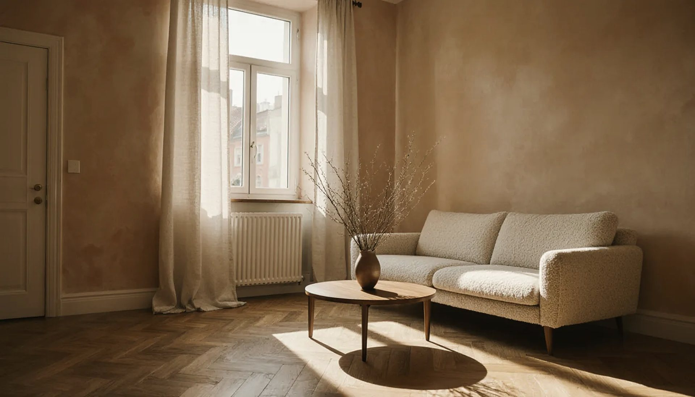
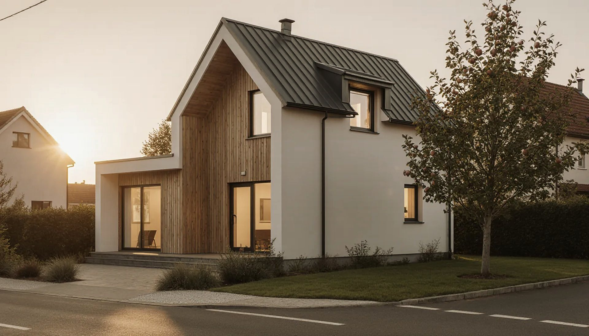

Veronika Strešková · Ceny nehnuteľností
Ceny bytov
v Senci
Stredná ponuková cena je 3 070 €/m², typický byt sa ponúka za 199 000 €. Údaje z 107 inzerátov, stav v októbri 2026.
Trh v Senci · október 2026
Čísla, s ktorými začíname každý predaj
Byty podľa počtu izieb
Byty v porovnaní s okolím
Ponukové ceny z 107 inzerátov bytov (okres Senec) na slovenských realitných portáloch, stav v októbri 2026. Stredná hodnota je medián — polovica ponúk je drahšia, polovica lacnejšia.
Časté otázky
Na čo sa pýtate najčastejšie
Koľko stojí meter štvorcový bytu v Senci?
Podľa 107 aktuálnych ponúk z realitných portálov je stredná ponuková cena bytu (okres Senec) 3 070 € za m². Polovica bytov sa ponúka v rozpätí 2 701 – 3 567 €/m². Údaje sú aktualizované v októbri 2026.
Koľko stojí 3-izbový byt v Senci?
Typický 3-izbový byt s plochou okolo 72 m² sa v Senci ponúka približne za 214 000 €. Konečnú cenu ovplyvní najmä stav, poschodie, balkón či loggia, parkovanie a konkrétna ulica.
Za koľko sa predávajú rodinné domy v Senci?
Stredná ponuková cena rodinného domu je 354 000 € pri úžitkovej ploche okolo 128 m², teda zhruba 2 679 € za m². Pri domoch rozhoduje aj veľkosť pozemku a stav kúrenia, strechy a okien.

Predávate?
Začnime cenou.
Zavolajte, napíšte alebo si spravte odhad online. Ozvem sa do 24 hodín a dohodneme sa, kedy sa prídem pozrieť.